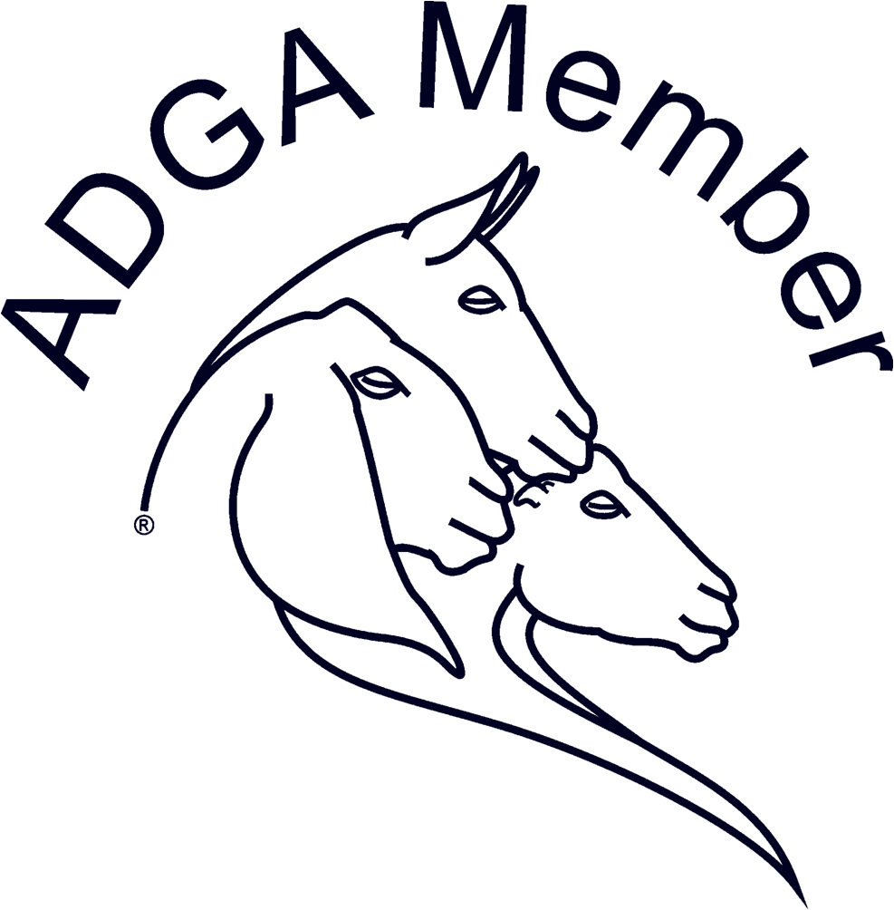

The Goats
Margaret got into agriculture because of dairy goats, so they were a must for our farm for both emotional and practical reasons. In addition to milk (and cheese, and yogurt, and ice cream...), the goats are good brush-hogs. Goats enjoy eating leaves, twigs, and bark from bushes and trees, as well as weeds like poison ivy and brambles. As we expand our cow pastures, it's likely that the goats will go in first to clear away some of the "junk."
About the breed: Oberhasli
Information gleaned from The Oberhasli Breeders of America and The Livestock Conservancy.
Origins
The Oberhasli, or Swiss Alpine, originated in...you guessed it...the Swiss Alps. They were brought into the US in the early 1900s as sturdy dairy and pack stock, where they were often crossed with French Alpines - another dairy breed. Over time, the desire to keep the Swiss Alpines distinct from the French (and crossbred American) Alpines, resulted in the formation of the Oberhasli Breeders of America and the push to rename the breed.Appearance
While French and American Alpines may be of any color or combination, the Swiss/Obers all had a very distinctive red-bay coat with black markings, called chamoisee. Some animals also carry a recessive gene for solid black coat, and others a yet unclassified variation nicknamed chestnut, which is solid red. At least in the American Dairy Goat Association, only chamoisee and black does, and chamoisee bucks, may be registered and shown as purebred. Like other Alpine-type breeds, Oberhaslis have erect ears (contrasted with African breeds that have pendulous ears). Most Oberhaslis have horns, though the polled (hornless) gene exists in the population, particularly those imported from Switzerland. While there's some reports of correlations between polled status and sterility, some breeders are opting to mix polled genetics into their herds for safety and convenience reasons.Milk Production
Oberhaslis produce neither the greatest volume of milk nor greatest percentage of butterfat compared to older-standing breeds, but their milk is noted for it's mild, sweet taste. Many does will produce a gallon or more of milk per day, which is still plenty enough for a homesteading family.About the breed: Golden Guernsey
Information gleaned from Guernsey Goat Breeders of America and The Golden Guernsey Goat Society.
Origins
As the name suggests, the Golden Guernsey breed originated in Guernsey itself in the UK, where a small group of light-colored goats was found and crossed to create a distinctly-colored breed. The first Herd Book started in the UK in 1965. Not many goats ever made it to the US, and due to animal health regulations this is now impossible. Thus pure Golden Guernseys are unavailable in the States - rather, the animals here are British Guernseys, that being a cross between a GG and anything else. Records are kept in the same Herd Book in the UK (and one will be introduced in the US soon), but the BGs and GGs are separate. To breed an animal in the US to be as pure GG as possible, imported semen or embryos must be used. For the purposes of this page (and many other pages, as it is), the goats are simply referred to as Golden Guernseys even if their pedigree is technically British Guernsey.Appearance
Like Oberhaslis, GGs are characterized by their color: any variation of cream or gold, with minimal white markings allowed. They tend to have longer hair - sometimes called "fringing" or "skirts" - on their backs, flanks, and legs. They are smaller than other standard-sized breeds, such as the Oberhasli. They are notably calm and quiet, and less mischief-prone than most other goats. They also are better grazers than many goats, who tend to prefer brush and trees to grass.Milk Production
As small goats, Guernseys produce less milk by volume compared to larger breeds, but are remarkably efficient. Their milk is also mild and sweet, and has a high yield when making cheese.Our herd
We currently own two Oberhasli does born in 2015 - Clover and Flow - and two Golden Guernsey does born in 2016 - Amber and Hailey.
The Oberhaslis came from a breeder a ways north of our farm, who has been raising and showing for years. The girls both have Heaven's Hollow, Cream-of-Kansas, and Forrest-Pride genetics. We expect them to milk well, and show well if we ever get time for that! Flow is a traditional bay color, while Clover is solid black. Margaret loves the black Obers and hopes to keep producing more. Both does are bred to Cream-of-Kansas Walking Sin for April 2017 kidding. Please contact us for inquiries on kids - we will take reservations.
Our Guernseys come from a registered herd in central Kansas. While not currently a recognized breed, the American Dairy Goat Association should be opening enrollment to Guernseys in the next few years. Even though they're not show-able, our Guernsey girls are sweet and gentle as well as gorgeous. They are indeed good grazers and have been very easy to care for. Margaret hopes to purchase a Guernsey buck for breeding next fall.
Management
Our goat herd is a combination of production and pleasure. Because of the legal restrictions, we are unlikely to ever sell milk or cheese; goat dairying is a time- and money-consuming endeavor.
We wait to breed all does until they are a year old, as in Margaret's experience breeding earlier can result in some health and growth issues. All doe kids, and some buck kids, will be registered with the appropriate organization(s) and will be available for sale. Again, contact us to ask about kidding plans or to express interest in any kids. We're happy to offer deals to 4-H and FFA members.
Our goats are given access to adequate pasture (or hay, in the winter), but are supplemented with grain to ensure proper growth and milk production. Our plan is to dam-raise the kids, as all our does are CAE and CL negative, but will be well-socialized to humans and dogs.
As with the cattle, we avoid excessive chemical or drug use. However, for animal health and comfort, we do use spray-on fly spray during the worst of the pest seasons, we do deworm as necessary with conventional anthelmintics, and will treat with antibiotics or other drugs as necessary.
Photo gallery